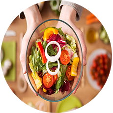

Missão
Ajudar pessoas a alcançar uma melhor qualidade de vida através da mudanças de padrão alimentar e estilo de vida. Trabalhar com a reeducação alimentar , individualidade bioquímica, juntamente com a desinflamação corporal e com a modulação de nutrientes a favor da saúde. Tratar cada Paciente como Ser Único que é e, mostrar como pode-se ter uma relação mais adequada com a alimentação e acima de tudo consigo mesmo. Permitir um maior auto-conhecimento através do coaching e da mudança de padrão de pensamento, pois acredito que é a chave para o sucesso no tratamento.
Serviços
-

Nutrição Funcional
Objetivo de promover saúde e previnir doenças!
-
Nutrição Gastrointestinal
Abordagem nutricional específica para o sistema digestivo ou gastrointestinal (SGI).
-
Nutrição Neurodivergente (TEA/TDAH)
A nutrição desempenha um papel fundamental no tratamento de pacientes com TEA/TDHA.
-
Prevenção e tratamento de Doenças Crônicas
Previnir é mais simples do que tratar!
Contato
Fale comigo agora, envia sua mensagem via whatsapp